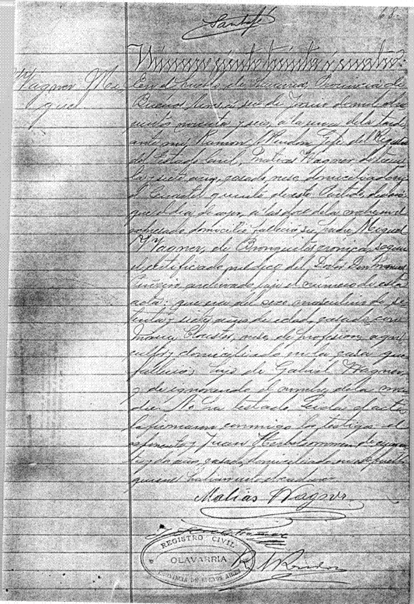

Acta de Fallecimiento de Miguel Wagner (1821-1896)

Transcripción:
En el pueblo de Olavarría, Provincia de
Buenos Aires, el seis de Junio de mil ocho-
cientos noventa y seis, a la una de la tarde
ante mí, Ramón A. Rindón, Jefe del Registro
del Estado Civil; Matías Wagner, de trein-
ta y siete años, casado, ruso, domiciliado en
el Cuartel quinto de este partido, declaró
que el día de ayer a las doce de la noche, en el
expresado domicilio falleció su padre Miguel
Wagner, de Bronquitis crónica, según
el certificado médico del Doctor Don Manuel
Piñeiro, archivado bajo el número de esta
acta: que era del sexo masculino de se-
tenta y siete años de edad, casado con
María Clouster, ruso, de profesión agri-
cultor y domiciliado en la casa que
falleció, hijo de Gabriel Wagner,
y de ignorando el nombre de la ma-
dre, No ha listado. Leída el acta
la firmarán conmigo los testigos: el
esfinente y Juan Herbstommer de cuaren-
ta y ocho años, casado, domiciliado en el pueblo
quienes habían visto el cadáver.